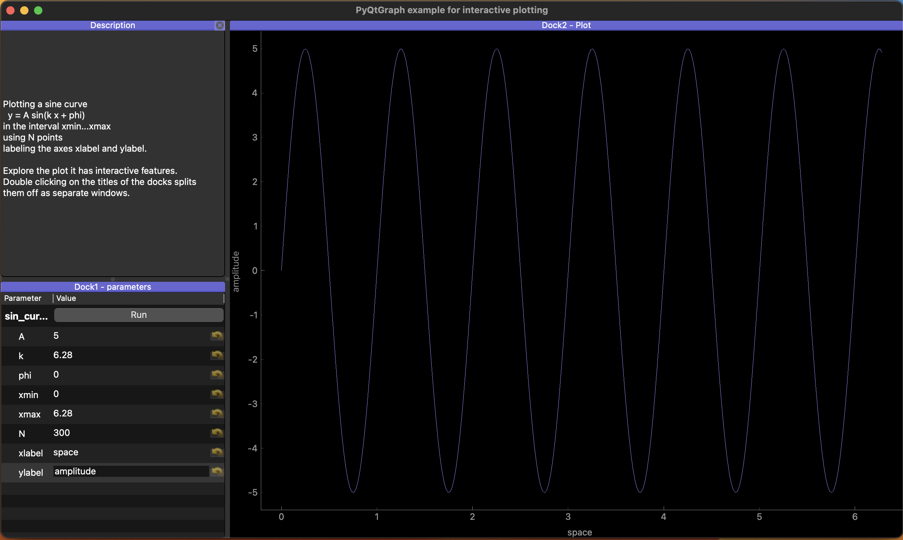

Graphical User Interface (GUI) programming#
It can be tremendous fun to build a graphical user interface for your programs to aid your exploration. pyqtgraph is a library that makes this large and intimidating subject more straight forward.
Here we will walk through installation and exploring the examples of the libraries before we make a small example that shows off a few of the powerful concepts in pyqtgraph.

Install pyqtgraph#
Here is the website with the installation instructions.
from IPython.display import IFrame
IFrame(src='https://pyqtgraph.readthedocs.io/en/latest/getting_started/installation.html', width=700, height=600)
Once you have it installed we want to explore at least some of the many examples that come with the library.
import pyqtgraph.examples
pyqtgraph.examples.run()
One simple interactive plotting application#
In this next example note that we have a single function sin_curve that has all named parameters. With one single command interact the library extracts all of those as parameters and makes them available via the ParameterTree widget in a list view such that they all can individually be modified.
So for any function that you have you can wrap it analogously to generate a graphical user interface for it.
# pyqtgraph example app
from pyqtgraph.Qt import QtWidgets
import pyqtgraph as pg
from pyqtgraph.parametertree import Parameter, ParameterTree, interact
from pyqtgraph.dockarea.Dock import Dock
from pyqtgraph.dockarea.DockArea import DockArea
import numpy as np
desc = """ Plotting a sine curve
y = A sin(k x + phi)
in the interval xmin...xmax
using N points
labeling the axes xlabel and ylabel.
Explore the plot it has interactive features.
Double clicking on the titles of the docks splits
them off as separate windows.
"""
def sin_curve(A=5, k=6.28, phi=0, xmin=0, xmax=2*np.pi,
N=300,xlabel="space",ylabel="amplitude"):
x = np.linspace(xmin,xmax, N)
pw.clear()
pw.plot(x, A*np.sin(k*x + phi), pen=(150,150,255), name="Blue curve")
pw.setLabel('bottom', xlabel, units='')
pw.setLabel('left', ylabel, units='')
return
## One line of code, no name/value duplication
params = interact(sin_curve)
## makes app
app = pg.mkQApp()
## Define a top-level widget to hold everything
win = QtWidgets.QMainWindow()
win.setWindowTitle('PyQtGraph example for interactive plotting')
area = DockArea()
win.setCentralWidget(area)
win.resize(1000,500)
## Create docks, place them into the window one at a time.
## Note that size arguments are only a suggestion; docks will still have to
## fill the entire dock area and obey the limits of their internal widgets.
d0 = Dock("Description", closable=True)
d1 = Dock("Dock1 - parameters") ##
d2 = Dock("Dock2 - Plot", size=(30,40))
area.addDock(d2, 'right') ## place plot at right edge of dock area
area.addDock(d0,'left',d2) ## description on the left
area.addDock(d1, 'bottom', d0) ## place parameters below description
tree = ParameterTree()
tree.setParameters(params)
text = QtWidgets.QLabel(desc)
## plot window
pw = pg.PlotWidget()
## Add widgets to the docks
d1.addWidget(tree)
d2.addWidget(pw)
d0.addWidget(text)
## Display the widget as a new window
win.show()
pg.exec()
0